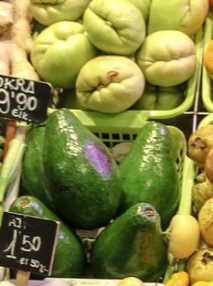

Sobre Nosotros
Actualmente, muchas comunidades enfrentan desafíos para acceder a productos frescos y de calidad de sus mercados o tiendas locales ya sea por falta de tiempo, dificultades de movilidad o la inconveniencia de horarios de compra. Los pequeños comercios, por su parte, luchan por competir con las grandes cadenas de supermercados y las plataformas de entrega masivas, que dominan el mercado digital. La mayoría de estos negocios carecen de una presencia en línea, lo que limita su alcance y les impide ofrecer opciones de compra modernas a sus clientes.
Nuestra plataforma surge para cerrar esta brecha. Al mismo tiempo, brindamos a los miembros de la comunidad una solución conveniente para hacer sus compras desde la comodidad de su hogar, apoyando al comercio local y fortaleciendo la economía del vecindario.

